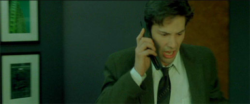
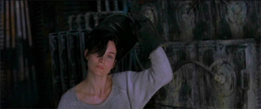
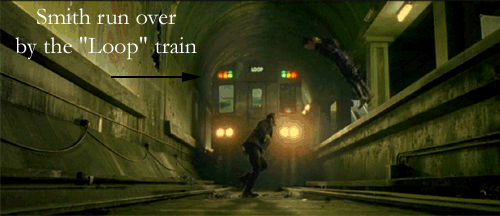

Hidden Concepts
~
~
~
~
Green Tint inside the Matrix

Brown tint in the real world

The train that runs over Agent Smith in the Matrx is the same train the Trainman jumps in front of in Revolutions.
